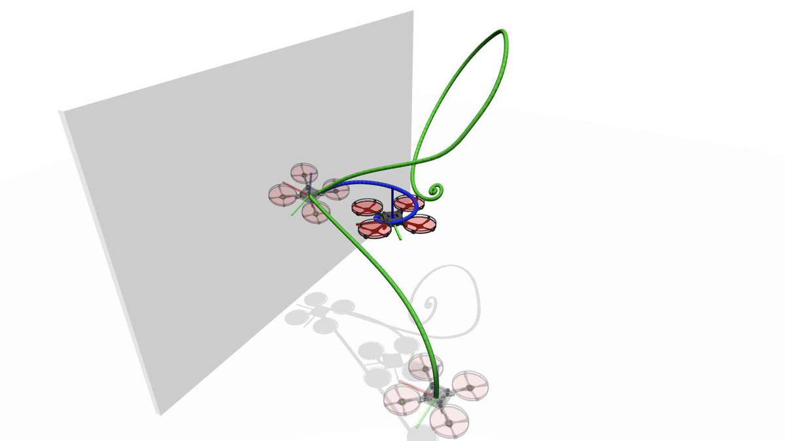
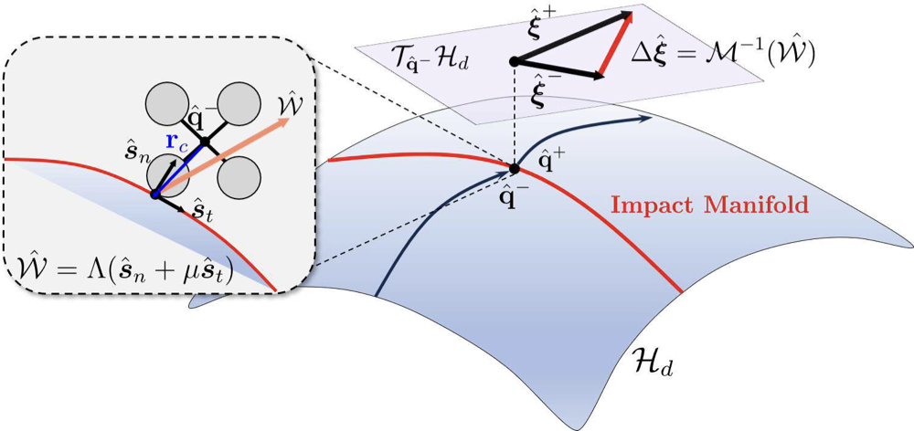
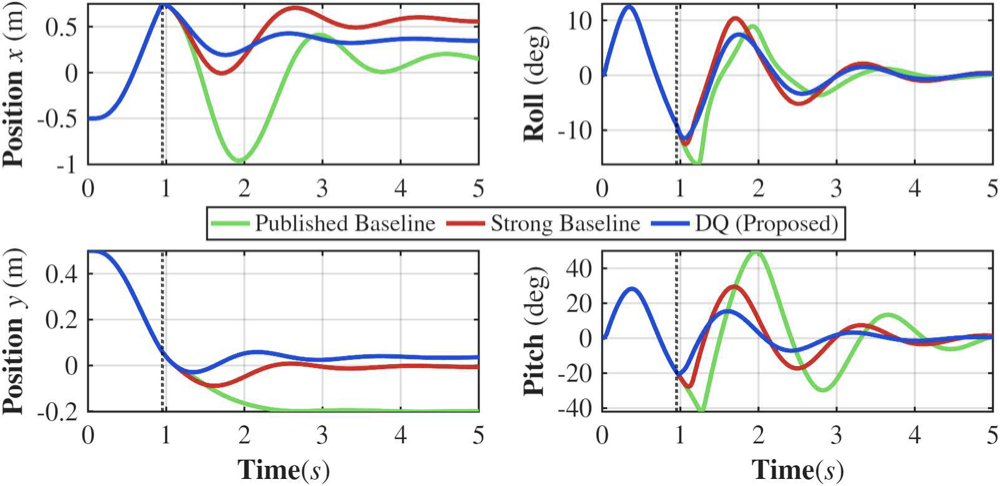
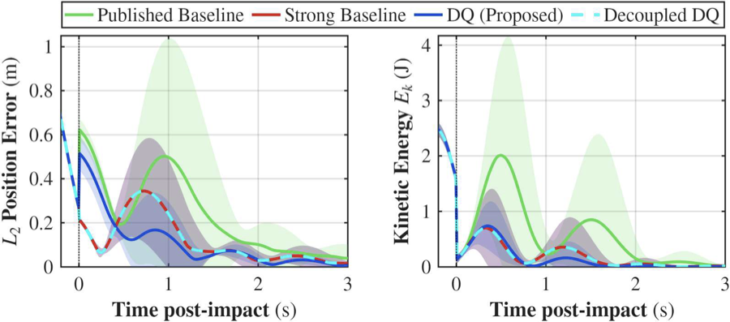
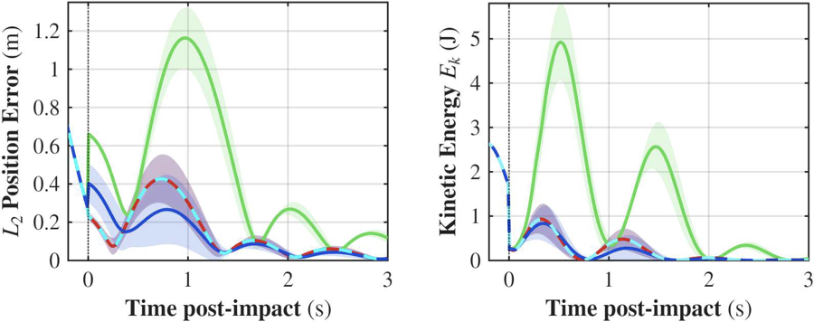

Dual quaternion collision recovery for quadrotors

The problem
UAVs operating in cluttered spaces have to survive contact — either to stabilise after an unplanned hit, or deliberately, for tactile exploration. A collision is a hybrid event: the vehicle flows continuously on \(SE(3)\) during free flight, then its velocity jumps instantaneously at impact. How faithfully that jump is modelled determines whether the recovery controller is stable.
The standard approach splits the configuration into a rotation matrix \(\mathbf{R}\in SO(3)\) and a translation \(\mathbf{p}\in\mathbb{R}^3\), then resolves the impact in those decoupled coordinates. The normal impulse magnitude comes from the contact normal alone and friction is applied separately afterwards, so the coupling between normal and tangential components never enters the impulse magnitude. Resolving both together under Coulomb friction otherwise requires iterative numerical schemes.
Related work, in one paragraph
Impulse-based collision resolution underpins modern quadrotor recovery, including Muller's high-speed recovery controller, which estimates post-impact states from the classical matrix formulation. Impacts are also modelled by solving linear complementarity problems in the inertial frame — the approach MuJoCo's contact solver takes. Separately, dual quaternions have long been a unified algebraic alternative for rigid-body motion: introduced by Clifford, they map \(SE(3)\) to the unit dual quaternion manifold and express rotation and translation as a single screw displacement. They have been applied to trajectory tracking and shown to be more computationally efficient and numerically stable than matrix formulations — but never, before this work, to the hybrid modelling of UAV collisions or to recovery control.
Preliminaries
Dual quaternions use dual numbers \(\hat{\mathbf{a}} = \mathbf{a} + \varepsilon\mathbf{b}\), where \(\varepsilon\) is nilpotent (\(\varepsilon^2 = 0,\ \varepsilon \neq 0\)). The primary part carries rotation, the dual part translation. The standard quadrotor dynamics this work starts from are
\[ \dot{\mathbf{p}}^W = \mathbf{v}^W, \qquad \dot{\mathbf{q}} = \tfrac{1}{2}\mathbf{q}\otimes\boldsymbol{\omega}^B \] \[ \dot{\mathbf{v}}^W = g\mathbf{e}_z^W - \tfrac{f}{m}\mathbf{q}\odot\mathbf{e}_z^B, \qquad \mathbf{J}\dot{\boldsymbol{\omega}}^B = \boldsymbol{\tau}^B - \boldsymbol{\omega}^B\times(\mathbf{J}\boldsymbol{\omega}^B) \]For comparison, the classical matrix reset map computes the impulse from an effective mass \(\rho\), which mixes the translational mass with the rotational moment-arm contribution:
\[ \boldsymbol{\lambda}^W = -\frac{(1+e)\,(\mathbf{v}_c^{W-})^\top\mathbf{n}^W}{\rho}\left(\mathbf{n}^W + \mu\,\mathbf{t}^W\right), \qquad \rho = m^{-1} + (\mathbf{r}_c^B\times\mathbf{n}^B)^\top\mathbf{J}^{-1}(\mathbf{r}_c^B\times\mathbf{n}^B) \]Note the structure: the normal direction \(\mathbf{n}^W\) sets the magnitude, and friction \(\mu\,\mathbf{t}^W\) is bolted on afterwards. That separation is the approximation this work removes.
The dual quaternion reset map
Rather than mapping out of the configuration space to \(SO(3)\) matrices to resolve the collision, the impact is evaluated inside the dual algebra, which preserves the \(SE(3)\) geometry across the discrete jump. Under a rigid impact over an infinitesimal interval, the jump in dual momentum equals the impulsive dual wrench, giving the reset map on the twist \(\hat{\boldsymbol{\xi}}\):
\[ \hat{\mathcal{R}}:\ \hat{\boldsymbol{\xi}}^{+} = \hat{\boldsymbol{\xi}}^{-} + \mathcal{M}^{-1}(\hat{\mathcal{W}}) \]The contact geometry is encoded as two orthogonal unit screws in Plücker line coordinates — a normal screw (penetration) and a tangential screw (slip):
\[ \hat{\mathbf{s}}_n = (\mathbf{r}_c^B\times\mathbf{n}^B) + \varepsilon\mathbf{n}^B, \qquad \hat{\mathbf{s}}_t = (\mathbf{r}_c^B\times\mathbf{t}^B) + \varepsilon\mathbf{t}^B \]Because these are Plücker lines, scaling them by scalar impulses generates both the 3D contact forces and the torques they induce about the centre of mass — no explicit moment-arm computation needed. With Coulomb friction the total wrench is \(\hat{\mathcal{W}} = \Lambda(\hat{\mathbf{s}}_n + \mu\hat{\mathbf{s}}_t)\).

The central result
Applying Newton's restitution law by projecting the reset onto the normal screw gives a closed form for the impulse magnitude:
\[ \Lambda = \frac{-(1+e)\,\langle\hat{\boldsymbol{\xi}}^{-},\hat{\mathbf{s}}_n\rangle}{\ \mu\,\langle\mathcal{M}^{-1}(\hat{\mathbf{s}}_t),\hat{\mathbf{s}}_n\rangle + \langle\mathcal{M}^{-1}(\hat{\mathbf{s}}_n),\hat{\mathbf{s}}_n\rangle\ } \]The first term in the denominator is the cross-coupling that decoupled formulations discard. Everything is one algebraic operation on the manifold — no matrix exponentials, no intermediate coordinate transforms.
Proposition 1. Setting the cross-coupling term \(\mu\langle\mathcal{M}^{-1}(\hat{\mathbf{s}}_t),\hat{\mathbf{s}}_n\rangle \approx 0\) recovers the classical matrix reset map exactly — the effective inertia reduces to \(\rho_{DQ} \equiv \rho\). The classical model is a special case, not a different model.
Recovery control and stability
To avoid actuator saturation, recovery uses an admittance strategy built directly on the manifold. The post-impact twist is scaled by a dual admittance gain to give a braking displacement in the Lie algebra, \(\hat{\boldsymbol{\delta}} = \hat{\mathbf{\Gamma}}\circ\hat{\boldsymbol{\xi}}^{+}\), which is mapped back to the configuration manifold through the dual exponential \(\hat{\mathbf{q}}_\Delta = \exp(\tfrac{1}{2}\hat{\boldsymbol{\delta}})\). Shifting the reference setpoint introduces virtual compliance, letting the vehicle yield to the collision. One screw displacement replaces the two independent shifts on \(\mathbb{R}^3\times SO(3)\) a non-dual implementation needs.
Proposition 2. The closed-loop hybrid system is Lyapunov stable at \(\mathcal{A} = \{x \mid \hat{\mathbf{q}}_e = \hat{\mathbf{1}},\ \hat{\boldsymbol{\xi}} = \hat{\mathbf{0}}\}\), using the candidate \(V = 2k_q(1-q_e^w) + \tfrac{1}{2}k_p\|\mathbf{p}_e\|^2 + \tfrac{1}{2}\|\hat{\boldsymbol{\xi}}\|^2_{\mathcal{M}}\). Since \(e\in[0,1)\) guarantees bounded energy dissipation per impact, Zeno executions are excluded.
Results
Computational cost
Counting floating-point operations for the reset map: the matrix formulation needs \(C(\text{MF}) = 69\), a position-plus-quaternion formulation \(C(\text{PQ}) \approx 65\), and the dual quaternion formulation \(C(\text{DQ}) = 52\) — a 25% FLOP reduction over the matrix baseline. C++ benchmarks on a Raspberry Pi 5 confirmed a 24% execution-time reduction. Operating on 8-element dual quaternion arrays rather than 12-element matrix–vector pairs also improves cache coherency, which matters for RTOS stability on shared flight hardware.
Closed-loop simulation

MuJoCo's soft-constraint LCP solver deliberately breaks the decoupled assumption by generating cross-coupled impact torques, so the simulation tests the controller against exactly the physics the model is meant to capture. Monte Carlo runs (\(N = 50\)) swept impact angle and friction coefficient.


| Sweep | Metric | vs published | vs strong baseline |
|---|---|---|---|
| Angle | \(L_2\) RMSE (m) | 50.8% | 12.4% |
| \(E_k\) RMSE (J) | 68.7% | 4.0% | |
| Friction | \(L_2\) RMSE (m) | 75.1% | 24.7% |
| \(E_k\) RMSE (J) | 85.0% | 12.7% |
The most informative row is the comparison against the strong baseline — a 6-DOF admittance shift with the classical decoupled reset, which no published UAV recovery method actually uses. Beating the published baselines largely reflects adding angular admittance. Beating the strong baseline isolates the cross-coupling correction as the source of the remaining gain. A deliberately decoupled dual quaternion variant lands exactly on the strong baseline, which is an empirical check on Proposition 1.
What this gives you
- A closed-form impact law that keeps normal–tangential coupling in a single operation, with no iterative solver.
- A recovery controller with proven hybrid Lyapunov stability that drops into standard cascaded UAV architectures.
- Cheaper to run than what it replaces — 25% fewer FLOPs, 24% lower measured latency on embedded hardware.